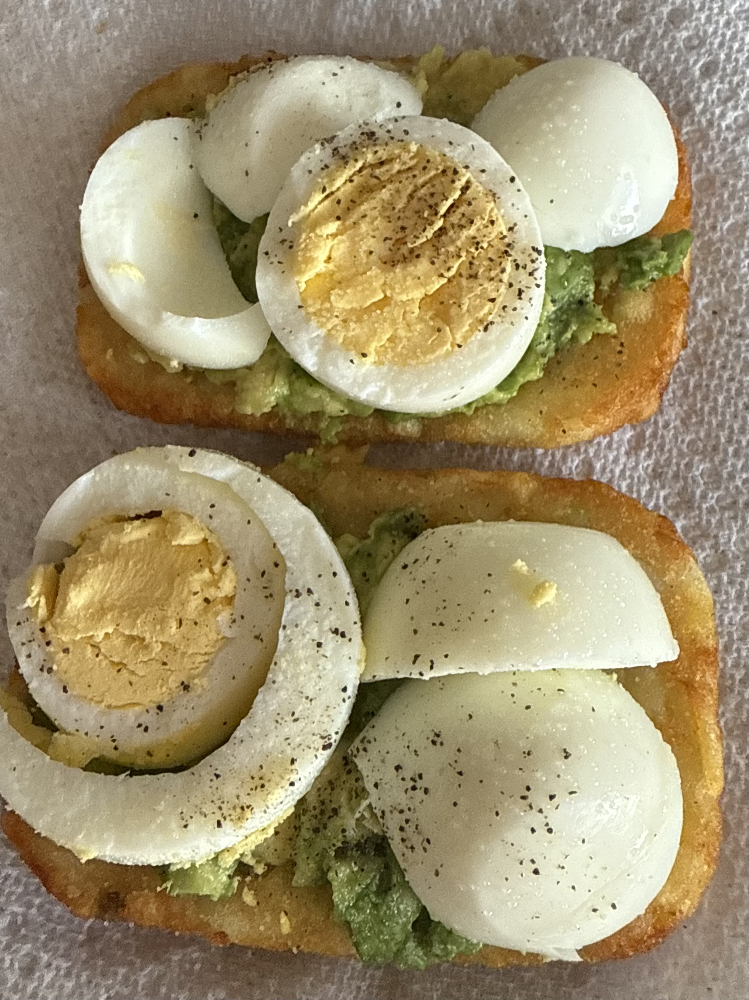

Avocado and Hardboiled Egg on Hashbrown

Ingredients
- 2 Frozen hashbrown patties
- 1 Avocado
- 1 Hardboiled Egg
Instructions
- Airfry 2 hashbrown patties for 10 minutes at 400F.
- Once cooked, spread avocado on both patties.
- Peel and cut a hardboiled egg into four parts.
- Assemble and enjoy!
This makes one serving!